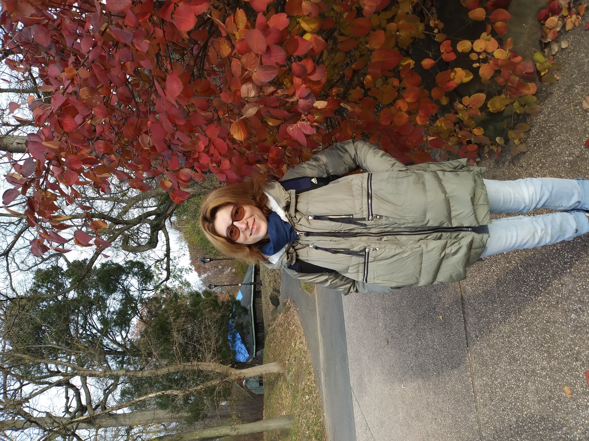

About
Oksana Kustova is a second-degree student at Bellevue University where
she is majoring in Web Development. She already has a Master's Degree in
Economics and has worked in this field for many years, holding a
Certificate of Professional Accountant as a Chief Accountant. But after
moving from Moscow (Russia) to NYC (the USA), which took place in 2017,
a new stage in life began for her. For almost seven years Oksana has
been a volunteer for a Russian charity organization that helps nursing
homes. Working for this company sparked interest in web development.
Oksana would very much like to create a web application for this company
that would allow working with data faster, more efficiently, and more
conveniently. Of course, she is not going to stop there, and after
graduation, she plans to find a job in the field of web development.

Mastering a new profession, Oksana wants to be an example for her three
children, showing them that it is interesting to learn something new and
they must make efforts to make their dream come true. In her free time,
which is not so much, Oksana goes hiking with her family and does
houseplants.